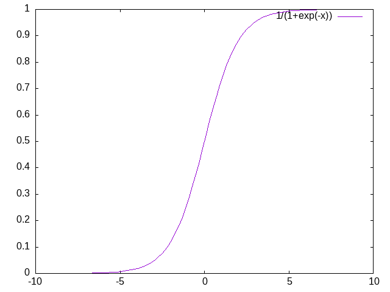

Math 555E
Linear Algebraic Models
Atabey Kaygun
Thursday, April 8, 2021
Logistic Regression
The Basic Setup
We have structured data (column data):
V1 V2 V3 V4 V5 V12 V13 Y
3.89 4.18 0.6 6.68 5.0 ... 0.4 1.7148 1
3.89 0.00 0.2 4.83 5.0 ... 0.4 0.5108 0
3.89 0.51 0.2 0.74 5.0 ... 0.4 0.3096 0
3.89 0.00 0.2 10.80 6.0 ... 0.4 3.5060 1
3.89 0.00 0.2 0.08 5.0 ... 0.4 0.2832 0
... ... ... ... ... ... ... ... ...
5.57 0.49 0.2 0.89 5.0 ... 0.4 0.3156 0This time our response variable is binary: 0 or 1.
The Model
y(i) ≈ σ(α⋅x(i)+β) = σ(θ⋅x(i)) where σ(x) = 1/(1+e − x)

The Likelihood Model
p(x(i)|y(i)=1) = σ(θ⋅x(i))
p(x(i)|y(i)=0) = 1 − σ(θ⋅x(i))
From Likelihood to Cost
cost(i)(θ) = − y(i)log σ(θ⋅x(i)) − (1−y(i))log (1−σ(θ⋅x(i)))
cost(θ) = − ∑iy(i)log σ(θ⋅x(i)) + (1−y(i))log (1−σ(θ⋅x(i)))
Find the Best Parameter via Optimization
Find the best θ θ0 = argminθcost(θ)
DEMO
Support Vector Machines
The Setup and The Data
- SVM is a supervised binary classification algorithm.
- Dataset {x(i), y(i)} consists of
- points x(i) ∈ ℝn
- y(i) ∈ { − 1, 1}.
The Main Idea

The Main Idea
In the simplest version,
- the data is linearly separable
- there is a hyperplane that sits in between
- aim is to find a hyperplane with the largest margin
- the margin is the gap between separating hyperplane
Some Linear Algebra
- Every hyperplane is determined by
- a normal vector w and
- a displacement b
- The separating hyperplane: w ⋅ x + b = 0
- Hϵ = {x(i) ∈ ℝn ∣ sgn(w⋅x+b) = ϵ}
The Cost Function
- Support Vectors: w ⋅ x(i) + b = ± 1
- Gap: 2/∥w∥.
- Best model maximizes the gap
- Equivalently minimizes ∥w∥.